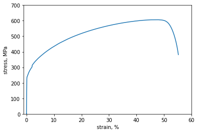

Tensile test workflow¶
Here, an examplary workflow of a tensile test is presented.
The data source is obtained from a triple store via sparql queries.
Then the elastic modulus is calculcated based on the given stress-strain data.
The calculated elastic modulus is returned to the triple store.
It must be mentioned that the sparql endpoint here is an instance of blazegraph, running on a personal cloud machine.
Importing and defining project from the custom defined module¶
from pyiron_tensile_test import Project
pr = Project('test_tensile_job')
pr.remove_jobs_silently(recursive=True)
Creating a job of type tensile test¶
job = pr.create.job.TensileJob(job_name='tensile_job')
Defining the sparql endpoint and query for data source¶
job.endpoint = 'https://blazegraph.workshop-virtual.de/bigdata/sparql'
download_url = job.query_data_source(test_name='Tensile_Test')
download_url
'https://datashare.mpcdf.mpg.de/s/9N5Z1YXxMv9g09p'
Obtaining the experimental dataset¶
job.get_dataset(url=download_url)
job.experimental_json
| test.metadata | test.series | |
|---|---|---|
| object.identifier | RX5163DV | NaN |
| test.start-timestamp | 2009-05-13T10:23:00+0200 | NaN |
| object.length | {'value': 50, 'unit': 'mm'} | NaN |
| object.cross-section-area | {'value': 78.658, 'unit': 'mm^2'} | NaN |
| test.speed-1 | {'value': 0.1, 'unit': 'mm/sec'} | NaN |
| test.speed-2 | {'value': 0.4, 'unit': 'mm/sec'} | NaN |
| Young's module | {'value': 202.1, 'unit': 'GPa'} | NaN |
| yield stress | {'value': 316, 'unit': 'MPa'} | NaN |
| tensile strength | {'value': 607, 'unit': 'MPa'} | NaN |
| fields | NaN | [[Time, s], [Crosshead Travel, mm], [Load, kN], [Tensile Stress, MPa], [Elongation_1, %], [Elongation_2, %], [Elongation Average, %]] |
| data | NaN | [[0.0, -4e-05, 0.00062, 0.007840000000000001, 0.0004900000000000001, 0.0, 0.0], [0.1, 0.00252, -0.00013000000000000002, -0.0016500000000000002, 0.00047000000000000004, 0.0, 0.0], [0.2, 0.00928, 0.... |
Extracting stress and strain data from the dataset¶
job.extract_stress_strain()
job.input.strains
array([4.90000000e-04, 4.70000000e-04, 5.00000000e-04, ...,
5.51814239e+01, 5.51907786e+01, 5.51935194e+01])
job.input.stresses
array([ 7.8400000e-03, -1.6500000e-03, 1.7400000e-03, ...,
3.8407181e+02, 3.8266739e+02, 3.8133539e+02])
job.plot_stress_strain()

Calculating the elastic modulus¶
job.run()
The job tensile_job was saved and received the ID: 355
job.output.elastic_modulus
201.21019550851148
Return the calculated value to the triple store¶
job.update_triple_store()
job.verify_update()
correctly updated!
True
Verifying the hdf5 file storage¶
job_load = pr.load(job.name)
job_load.output
DataContainer({
"elastic_modulus": "201.21019550851148"
})job_load.input
DataContainer({
"test_name": "'Tensile_Test'",
"strains": "array([4.90000000e-04, 4.70000000e-04, 5.00000000e-04, ...,\n 5.51814239e+01, 5.51907786e+01, 5.51935194e+01])",
"stresses": "array([ 7.8400000e-03, -1.6500000e-03, 1.7400000e-03, ...,\n 3.8407181e+02, 3.8266739e+02, 3.8133539e+02])"
})